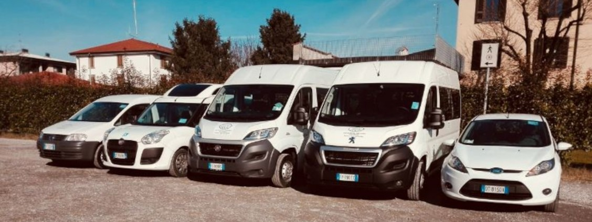

Associazione Volontari del Trasporto San Rocco
Volontari per il Bene Comune

Volontari con Volontà
Persone che operano con dedicazione e serietà per il bene della comunità, i nostri mezzi sono attrezzati al trasporto singolo o collettivo.
Il Nostro Parco Mezzi

Tutto è iniziato nel 2004 con un pulmino a 9 posti, da all'ora
l'Associazione Volontari del Trasporto San Rocco ha visto aumentare il
proprio parco mezzi fino all'attuale, composto sia da furgoni
equipaggiati per il sollevamento di carrozzine sia da auto.
Merito del grande impegno profuso dai numerosi Volontari che nel tempo
hanno portato il loro prezioso ed instancabile contributo, persone che
hanno visto nascere l'Associazione e sono ancora attive e volontari da
ricordare, passati lasciando il segno.
Servizi Offerti
Grazie ad un parco mezzi completo ed appositamente equipaggiato,
l'Associazione Volontari del Trasporto San Rocco è in grado di
assistere soggetti con problematiche fisiche o psichiche nelle loro
esigenze di mobilità ma anche chi ha la semplice necessità di
spostarsi per motivi di salute o bisogno.
E' ATTIVA UNA
CONVENZIONE CON IL COMUNE DI CIVIDATE AL PIANO.
Prenota il Servizio
Previo appuntamento San Rocco è in grado di offrire i seguenti servizi:
- Trasporto verso strutture sanitarie.
- Trasporto di persone soggette a dialisi.
- Trasporto a mete concordate.
- Trasporto di gruppo disabili.
Il Servizio è prevalentemente finalizzato a:
- Terapie Mediche.
- Visite Specialistiche.
- Dialisi.
- Cure Termali.
- Trasporto Scolastico con carrozzine.
- Trasporto Atleti disabili.
Sono prevalentemente servite le Province di Bergamo, Brescia, Milano e
gli Ospedali di Treviglio e Romano di Lombardia.
Per ogni
esigenza è disponibile il mezzo più idoneo, dalla macchina al furgone
con pedana automatizzata per carrozzine.
Il servizio prevede la
presenza dell'autista e, dove necessario, dell'assistente.
E'
possibile prenotare un singolo appuntamento o concordare più giorni in
funzione delle necessità del richiedente, fino a servizi continuativi
come nel caso di dialisi.
Associazione Volontari del Trasporto San Rocco offre un servizio
completo per ogni specifica esigenza di mobilità sul territorio.
Prenota il Servizio
Dona il tuo 5x1000

Anche quest'anno puoi destinare il tuo 5x1000 all'Associazione
Volontari del Trasporto San Rocco: un aiuto concreto per continuare
a garantire trasporti sicuri a chi ne ha più bisogno.
Firma nel riquadro “Sostegno degli enti del Terzo Settore” della tua
dichiarazione dei redditi e inserisci il nostro
codice fiscale: 92017760163.
Grazie al tuo
contributo potremo mantenere ed espandere il nostro parco mezzi,
migliorare i servizi e continuare a rispondere con efficienza e
umanità ai bisogni delle persone fragili.
Non ti costa nulla, ma per noi è un aiuto prezioso